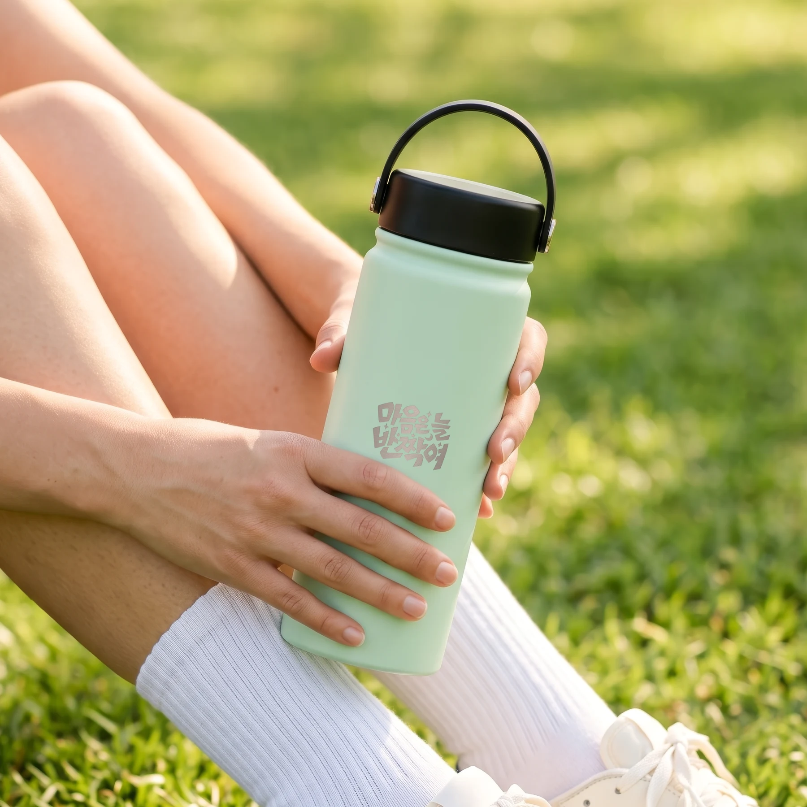
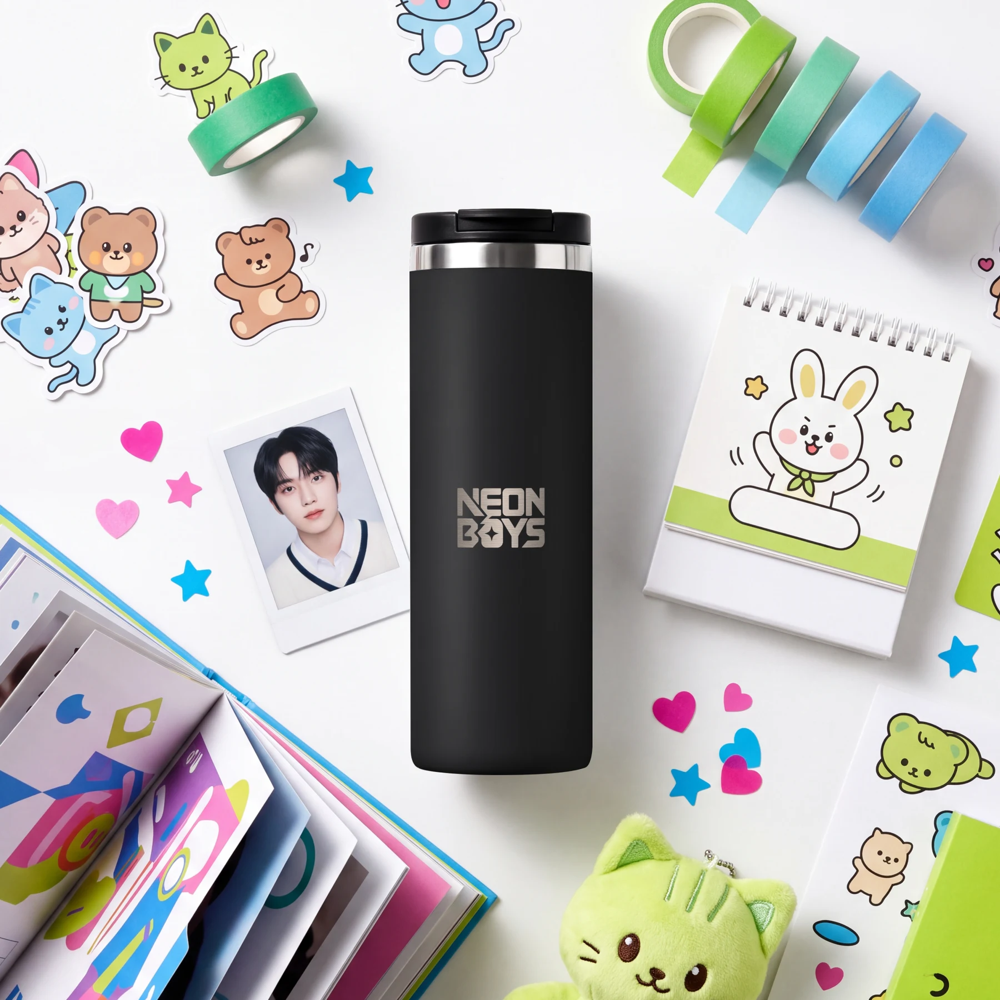
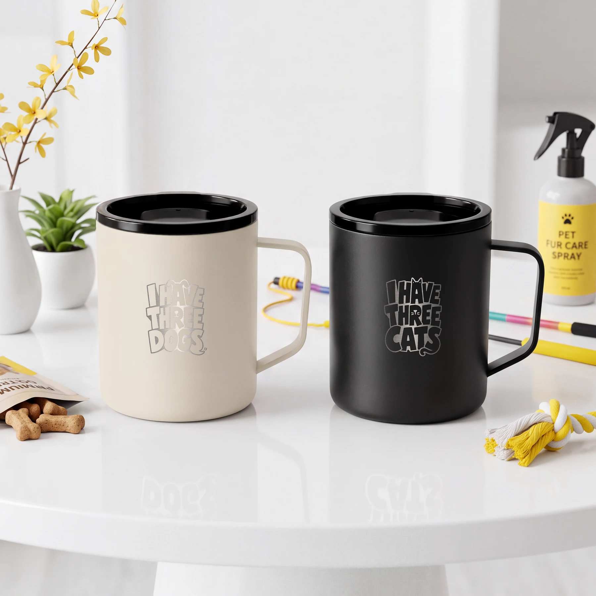
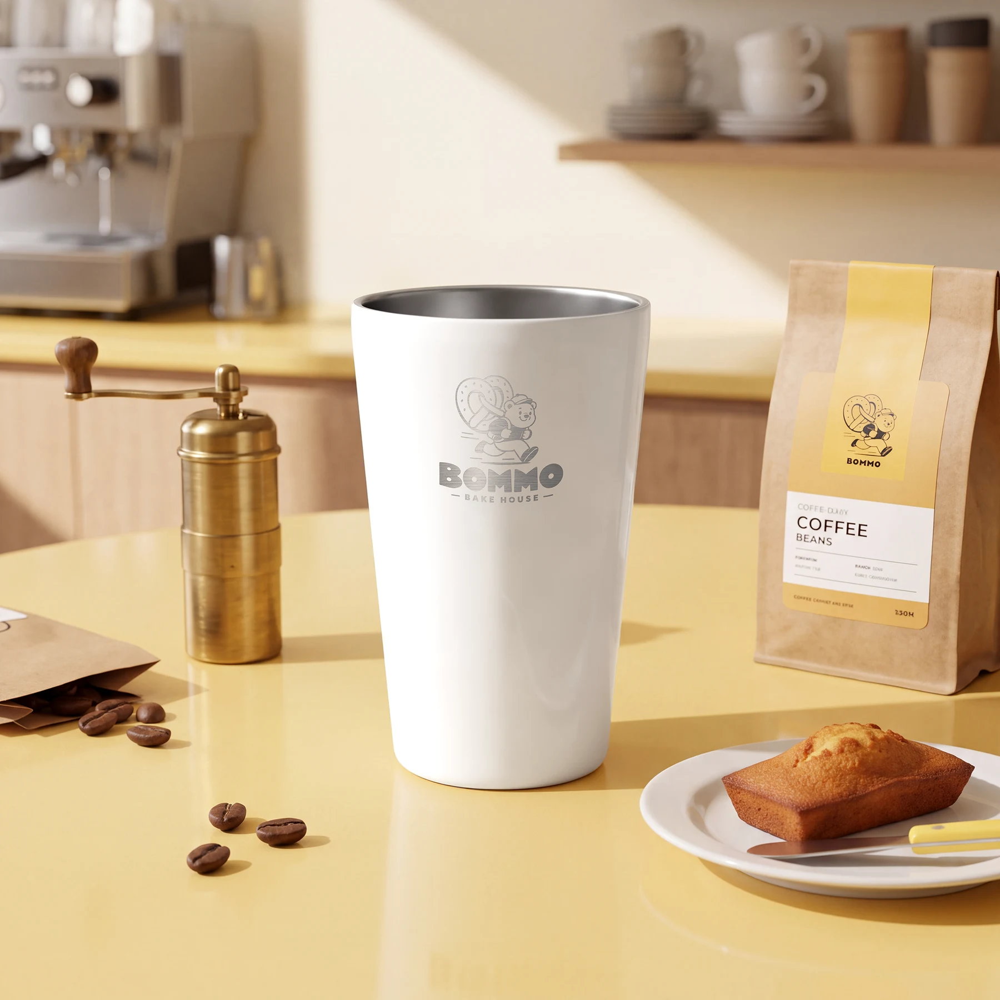
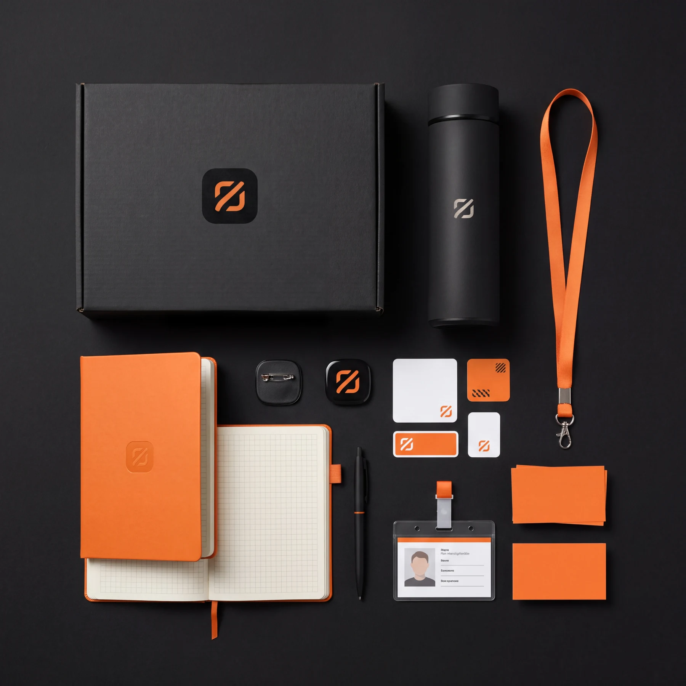
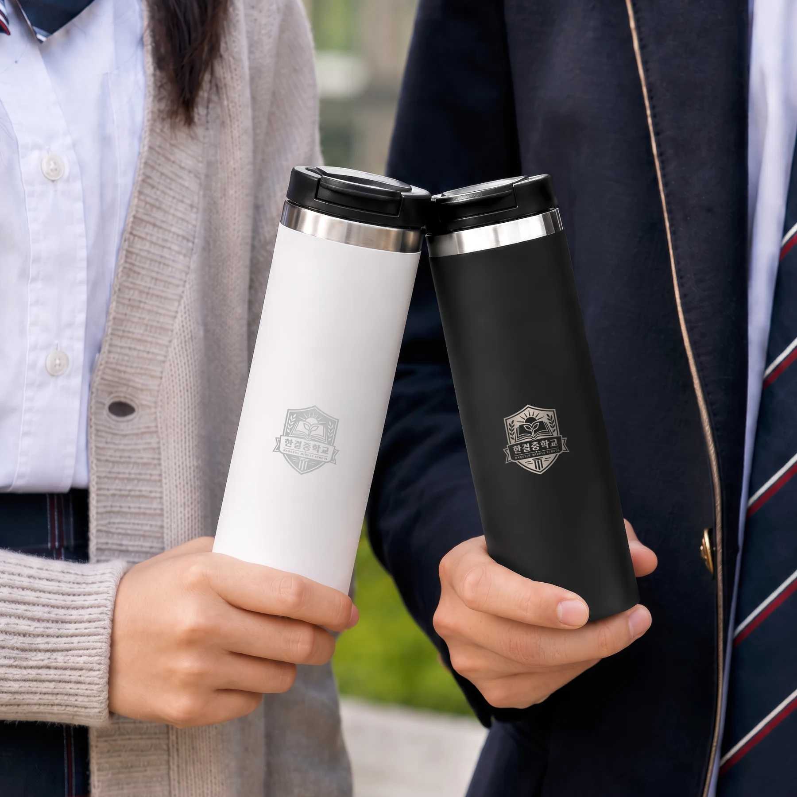

← 모든 작업물AI / 15
AI · Drinkware
드링크웨어 각인 제품 연출컷 갤러리
2026- 제작 연도
- 2026
- 작업 기간
- 3일
- 사용 프로그램
- OpenRouter, Photoshop
기여도 및 작업 범위
기여도 100%
각인한 텀블러, 보틀, 머그를 사용 장면과 패키지 구성에 담아 AI 이미지로 연출했습니다. 제품에 인쇄된 아트웍 또한 AI 생성이미지입니다.







